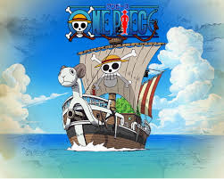
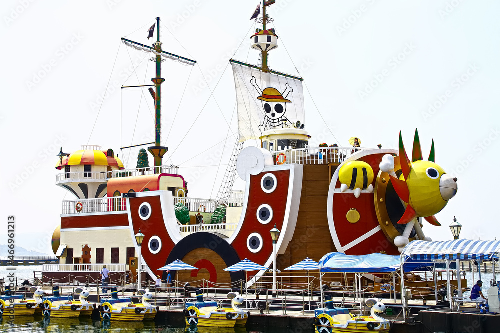

Going Merry
The Going Merry was the first ship of the Straw Hat Pirates.
Thousand Sunny
After the Going Merry's emotional farewell, the crew received the Thousand Sunny. Franky was the one who built this ship.
The two ship has a room for each crew member that resembles them. They were both very important to them on their journey.
Enemies and rivals ships
Trafalgar Law ship
This is Laws ship, it can go under water and attack enemies.
Eustass Kid Ship
The Victoria Punk, where kid can use his devil fruit power and attach metal to make his ship stronger.
Big Mama ship
This is Big Mom ship, made out of crackers and desserts. Its a massive ship to fit Big mom the giant.